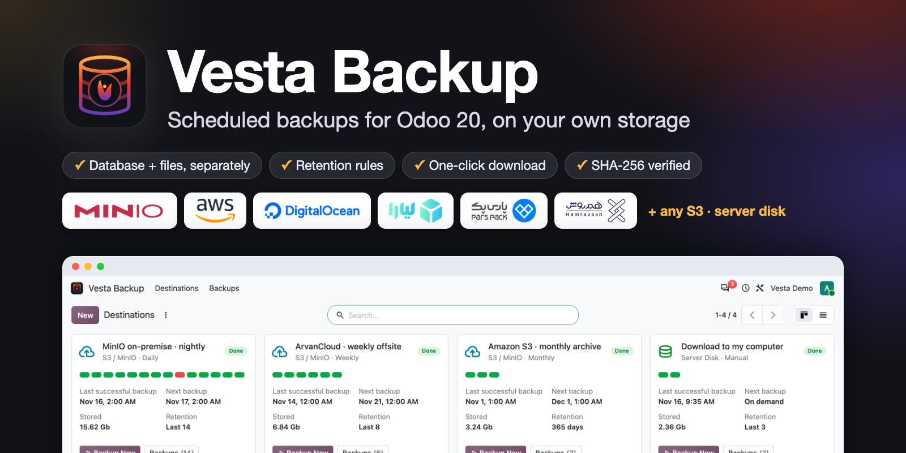
Vesta Backup backs up your Odoo 20 database and its files on a schedule, to the storage you own: a MinIO on your own network, AWS S3, DigitalOcean Spaces, Liara, ParsPack, Hamravesh, ArvanCloud, Cloudflare R2 or any other S3-compatible storage, or the server disk. Old backups are pruned for you, every file is checksummed, and any backup is one click away from your laptop.
Works with
pg_dump.tar.gz, plus a manifest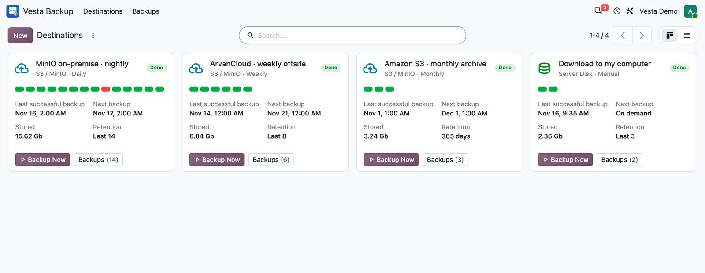
Every destination on one screen: last and next backup, stored size, retention and the last 14 runs.
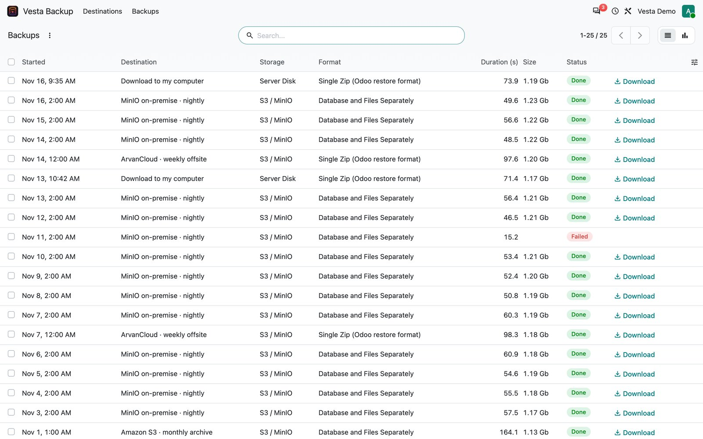
Every backup with its status, size and a Download button.
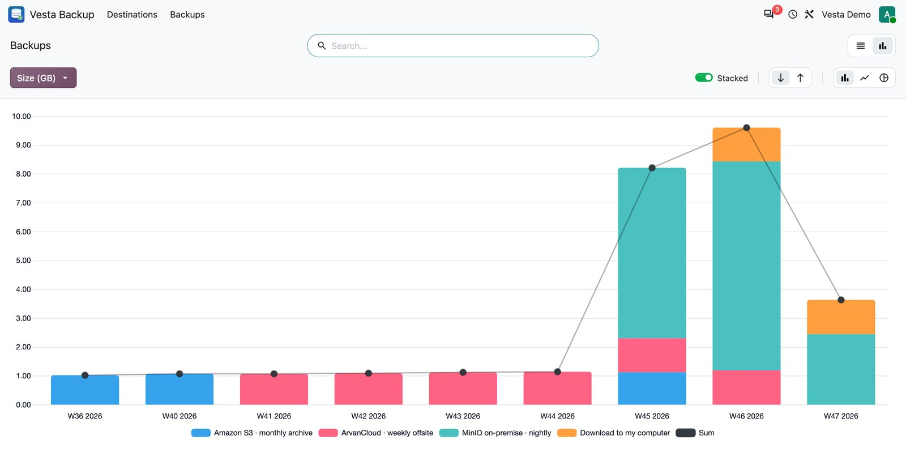
Backup volume per week and destination.
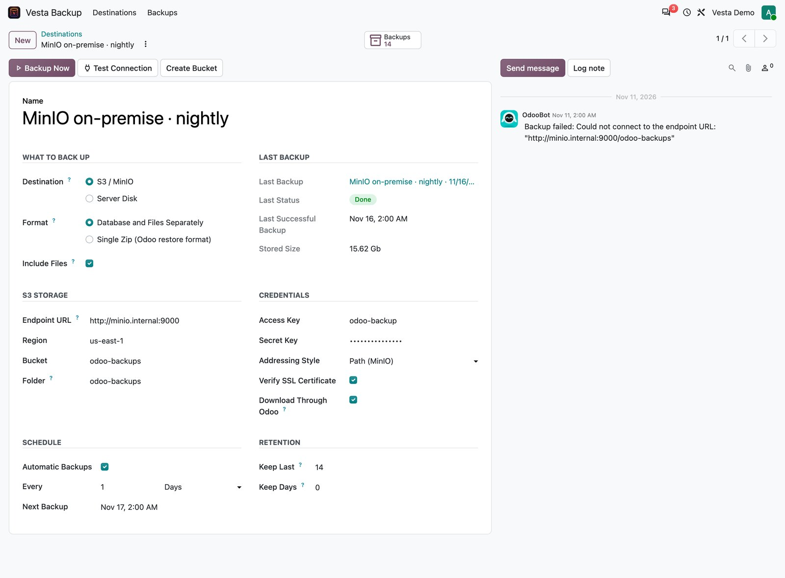
S3 endpoint, schedule and retention in one form.
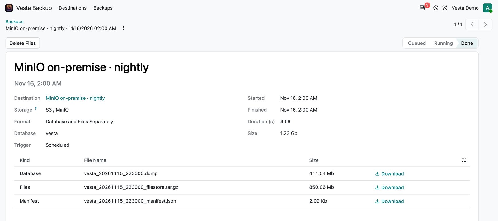
Database, files and manifest: download each one.
pip install boto3 on the server and install Vesta Backup.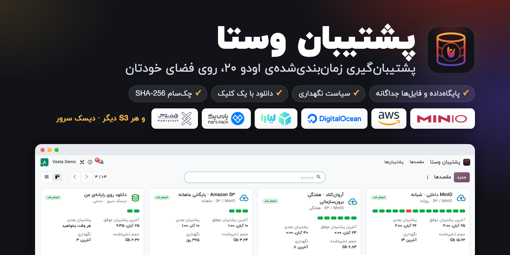
پشتیبان وستا طبق زمانبندی از پایگاهدادهی اودو ۲۰ و فایلهایش پشتیبان میگیرد و آن را روی فضای خود شما میگذارد: MinIO داخل شبکه، لیارا، پارسپک، همروش، آروانکلاد، AWS، DigitalOcean یا هر فضای سازگار با S3 دیگر، یا دیسک سرور. پشتیبانهای قدیمی خودکار پاک میشوند، هر فایل چکسام دارد و هر پشتیبان با یک کلیک روی رایانهی شما دانلود میشود.
سازگار با
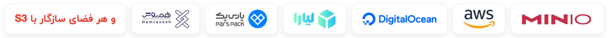
pg_dump فشرده.tar.gz همراه فایل مشخصات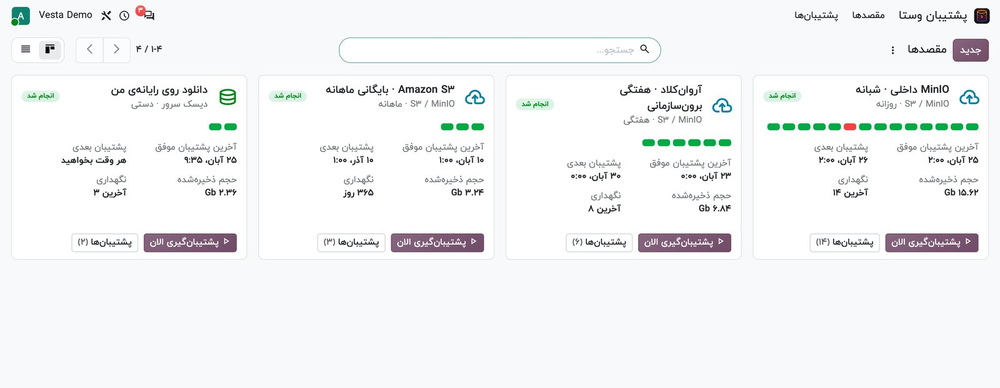
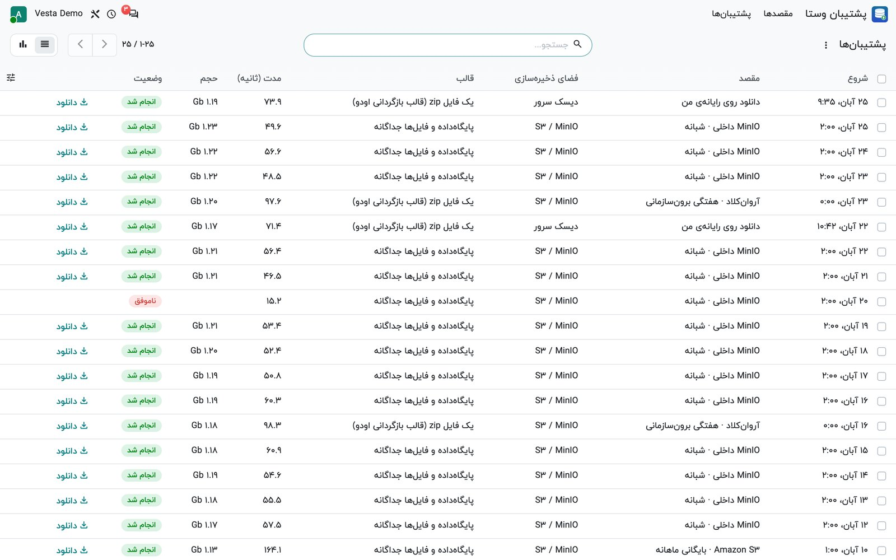
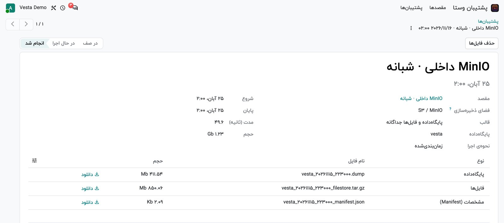